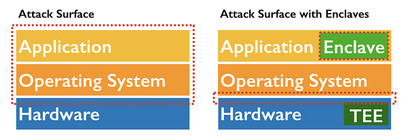
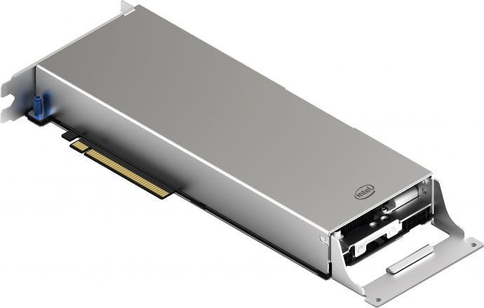

Secure enclaves, or trusted execution environments (TEEs), generally describe small, trusted environments within a CPU that can execute code in a way that is not accessible by the normal operating system. Enclaves are a safe space to run code or process data in an otherwise untrusted environment. Furthermore, enclaves are typically remotely attestable - meaning you can cryptographically verify that an enclave running on someone else's computer is running authentic, unmodified code.
Note: This article will be updated with new info over time.

Intel SGX is the most promising enclave technology available today for general purpose computing. Development tools are becoming more mature with the support of industry players like Google and Microsoft. However, most use cases tend to be at the proof of concept stage or are early products looking for market fits. There are not good public examples of success stories using SGX in production. The most likely places to find real world deployments are Microsoft Azure's Confidential Computing or among Fortanix's customers.
Key management is an especially good fit for enclaves since there generally are not complex dependencies or large data requirements. Secret keys can be deployed and used from within enclaves and not exposed to untrusted hosts. Two example key management uses are Digital Rights Management (DRM), where content keys are protected within enclaves, and TLS termination, where private TLS certificates can be protected. The Dashlane password manager is an example of using SGX to protect passwords.
Other common proposed applications include private analytics, private contact syncing, and privacy-preserving machine learning. None have moved beyond the proof of concept phase. Multiple digital currencies and blockchain projects also mention TEEs in their designs, though the actual use is not clear.
Intel's Software Guard Extensions (SGX) are available on modern Intel desktop and low-end server CPUs, e.g. Intel Xeon E3s. As of writing, SGX is not yet available in high-end server CPUs which has been a barrier for adoption by potential users. Most enclave development in recent years has focused on SGX because of the potential market for privacy-preserving cloud applications.

SGX is one of several enclave technologies. Perhaps most widespread is ARM's TrustZone, which provides hardware isolation for trusted software. TrustZone is commonly used in mobile platforms such as Samsung's Knox. AMD Secure Encrypted Virtualization (SEV) is a TEE offering with support for encrypted virtual machines whose memory is not accessible to a hypervisor, but has limited use. Keystone is an academic project for building TEEs on the Risc-V architecture and not yet available on any commercial hardware.
Intel offers an SGX SDK, as well as an SGX SSL library, and a reference attestation server. Baidu developed their own Rust language SGX SDK. Fortanix Enclave Development Platform is another Rust language toolkit specifically for SGX.
Microsoft Open Enclave provides a consistent API across different enclave technologies and is supported by Microsoft Azure.
Asylo is Google's open source framework for confidential computing across different enclave technologies. Google's Project Oak is built from Asylo and specifies how data is transferred between enclaves and how access control policies are enforced.
Red Hat's Enarx is another application development environment for building enclaves across different technologies.
MesaTEE is Baidu's framework to build applications on SGX.
Golem's Graphene is a library operating system, similar to a unikernel, which can support running unmodified executables on different platforms including SGX.
SCONE allows cross-compilation of existing software to run inside SGX enclaves.
TaLoS is an open source project that allows existing applications to terminate TLS in an enclave; protecting private key material from the termination endpoint.
Microsoft Azure Confidential Computing and Alibaba Cloud Elastic Compute Service both offer SGX support. Packet offers bare metal servers with SGX support. Amazon Web Services and Google Cloud do not currently offer SGX support. Google Cloud may be closer since they have been working on multiple confidential computing projects. IBM Cloud offers SGX through a partnership with Fortanix.
Fortanix developed key management and general runtime encryption products based on SGX. They've built a hardware appliance for on-premise and a "Hardware Security Model as a service" called SmartKey via a partnership with Equinix. Fortanix also provides SGX support to IBM Cloud.
Anjuna offers a runtime security product that promises to be able to run existing applications in a SGX enclave without code modifications.
Oasis Labs is building a privacy-preserving blockchain technology using SGX. Kara is a partner using Oasis' tools for privacy-preserving medical research.
Golem is a shared computing network powered by SGX and via their Graphene library. They are initially focused on distributed rendering.
Scone develops and offers services around the SCONE platform.
Sharemind HI is a hardware isolation product based on SGX that is intended for data sharing applications.
Evervault is building a Javascript SDK for deploying SGX enclaves.
Numerous blockchain companies claim to use SGX in their underlying technology. None have significant adoption.
Confidential Computing Consortium is a Linux Community project aimed at increasing adoption of confidential computing. Some members include Alibaba, Google, Tencent, IBM, Intel, Microsoft, and Red Hat.
Google's Confidential Computing Challenge was a contest to spur development of real-world applications.
Thanks to Tony Arcieri, Jeremy Boone, Nick Mooney, & Rob Wood for comments and feedback.